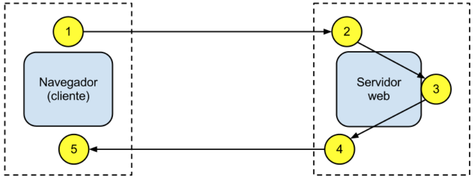
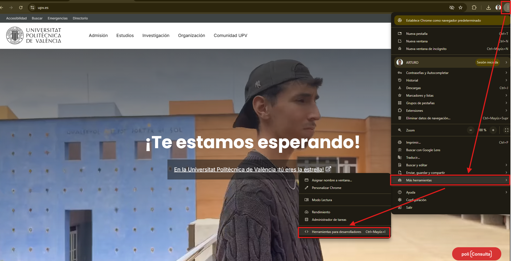
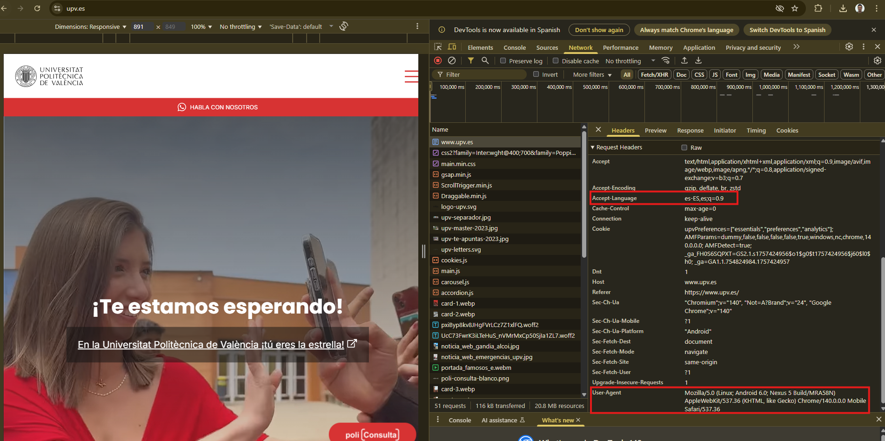
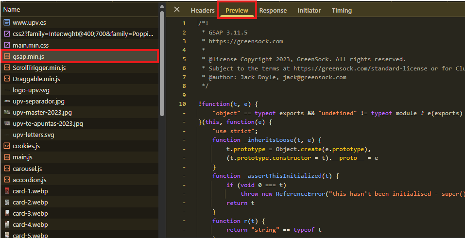
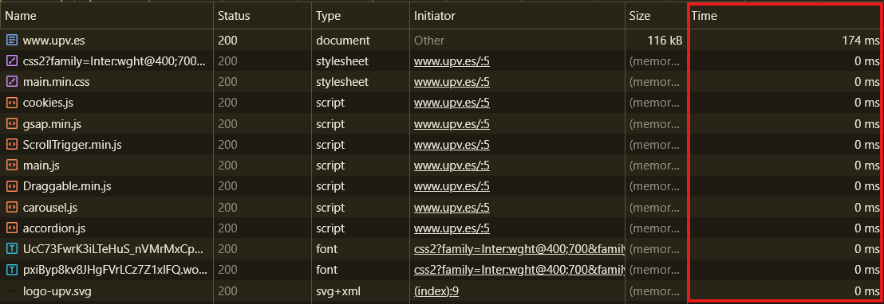

1.2. Arquitectures web¶
1.2. Arquitectures web¶
Les arquitectures web descriuen la relació entre els distints elements que participen en l'intercanvi/processament d'informació a través d'Internet, així com les seues funcions.
La gran majoria de les arquitectures web en l'actualitat són de tipus client-servidor: una comunicació asimètrica en què un dels extrems oferix un o més serveis i l'altre en fa ús. Esta és l'arquitectura en què ens centrarem, encara que n'hi ha d'altres com la Punt a Punt (P2P - Peer to Peer).
Arquitectura client‑servidor¶
El model client-servidor és un model que repartix tasques entre els proveïdors d'un recurs o servei, anomenats servidors, i els sol·licitants/consumidors del servei, anomenats clients .
El més freqüent és que els clients i els servidors es comuniquen a través d'una xarxa de comunicacions, però tots dos poden residir en la mateixa màquina (normalment en tasques de desenvolupament).
L'esquema de funcionament més bàsic del model client-servidor per a una arquitectura web està basat en un o diversos clients que sol·liciten una pàgina web a un servidor web:
- Des del navegador web (o agent d'usuari, que pot ser també una app nativa o fins i tot un altre servidor) l'usuari sol·licita un servei web indicant-ne la URL.
- El servidor rep la petició mitjançant el protocol d'aplicació HTTP, i la processa mitjançant la seua lògica de negoci .
- Produïx una resposta HTTP a la petició, que envia al client. Esta resposta pot contindre fitxers de diferent naturalesa: HTML, CSS, XML, JSON, fitxers multimèdia, codi JavaScript, etc.
- El navegador web rep la informació enviada pel servidor i la interpreta. En funció de la resposta enviada, es representa en el navegador la resposta a l'usuari (normalment en forma de pàgina web).

A continuació es mostren els avantatges i desavantatges al respecte:
Avantatges:
- Centralització del control: els accessos, recursos i la integritat de les dades són controlats pel servidor. Esta centralització també facilita la tasca d'actualitzar dades o altres recursos.
- Escalabilitat : es pot augmentar la capacitat de clients i servidors per separat. Qualsevol element pot ser augmentat (o millorat) en qualsevol moment, o es poden afegir nous nodes a la xarxa (clients i/o servidors), sempre que el sistema estiga dissenyat per a això.
- Portabilitat : el fet que l'aplicació web s'execute en un navegador web fa que el programari s'independitze del sistema operatiu sobre el qual s'executa. D'esta manera, s'aprofita el desenvolupament per a les diferents plataformes.
- Fàcil manteniment : com que les funcions i responsabilitats estan distribuïdes entre diversos ordinadors independents, és possible reemplaçar, reparar, actualitzar, o fins i tot traslladar un servidor, mentre que els seus clients no es veuran afectats per eixe canvi (o es veuran afectats mínimament). Esta independència dels canvis també es coneix com a encapsulació .
- Hi ha tecnologies , prou desenvolupades, dissenyades per al model client-servidor que asseguren la seguretat en les transaccions, la usabilitat de la interfície, i la facilitat d'ús.
Desavantatges:
- La congestió del trànsit ha sigut sempre un problema en esta arquitectura. Quan una gran quantitat de clients envien peticions simultànies al mateix servidor, es poden produir situacions de sobrecàrrega.
- Quan un servidor està caigut, les peticions dels clients no poden ser satisfetes , ja que els recursos no estan distribuïts.
- El programari i el maquinari d'un servidor són generalment molt determinants. Normalment es necessita programari i maquinari específic , depenent del tipus de servei web, sobretot en el costat del servidor. Això augmentarà el cost. Com a alternativa, es disposa de serveis web en el núvol, amb diversos tipus de costos dependents de l'arquitectura web.
NOTA : Estos desavantatges es referixen al cas en què els recursos del servidor no estan replicats i/o distribuïts. Actualment hi ha tècniques d'escalat horitzontal i vertical que poden esmenar estos problemes.
Exemple amb DevTools
Peticions des del navegador
En este apartat intentarem indagar un poc més en què passa darrere de les cortines quan consultem una URL. Observarem, a través de les eines de desenvolupador del navegador web Chrome (igual ens pot servir Firefox o qualsevol altre), els 4 passos que es detallaven en l'apartat anterior.
A continuació obrim les eines de desenvolupador i anem a la pestanya Network (o Xarxa):
Obrim upv.es i accedim al menú hamburguesa DevTools → More tools → Developer tools (o directament F12)

Pestanya Network abans de refrescar:

En este moment encara no hi ha dades, perquè no hem fet cap petició al servidor amb la finestra d'eines de desenvolupador activa. Per tant, refresquem la pàgina (equivalent a fer una petició al servidor que gestiona https://www.upv.es/) i passem al punt següent.
El servidor rep la petició mitjançant el protocol d'aplicació HTTP, i la processa mitjançant la seua lògica de negoci.
Realment no podem saber exactament què està passant en el servidor durant este pas, tret que hi tinguérem accés, amb els privilegis i eines correctes, però sí que podem esbrinar moltes dades mitjançant eines com:
-
whois: ens indica, entre altres dades, que la IP del servidor és 158.42.4.23 (registre DNS de tipus A).
-
builtwith: ens indica, entre altres coses, que la plataforma web disposa de dos servidors web (Apache i nginx).
ULL: Hi ha altres tipus de mètodes per a conéixer més dades sobre el servidor que podrien implicar pràctiques il·legals, en l'àmbit de la ciberseguretat.
Este pas es duria a terme en el que s'anomena Back-end.
Vegem el resultat en el pas següent.
El servidor produïx una resposta a la petició del client, que l'envia a través d'internet i que recupera el nostre navegador.
Ara, si consultem la pestanya Network després de refrescar la URL, podrem veure que han aparegut molts registres, el primer dels quals té com a nom www.upv.es:
Este registre correspon a la primera petició que hem fet al servidor de www.elche.es. Si fem clic sobre ell podrem veure tant les dades de la petició realitzada, com la resposta enviada pel servidor a través d'Internet, mitjançant HTTP. Es pot veure que el codi retornat pel servidor és 200 (en color verd, senyal que no hi ha hagut cap error), i ha respost un servidor web apache:
Detall de Headers: status code 200 OK, server Apache

NOTA : el servidor pot enviar també la seua versió de programari, però això podria comportar atacs maliciosos, depenent de les vulnerabilitats de la dita > versió. És per això que és una bona pràctica configurar el servidor web perquè no envie eixa versió (entre altres aspectes).
Més avall, en la mateixa resposta, ens indica els paràmetres amb què s'ha fet la petició. Entre estos, podem veure el tipus de petició que hem fet (GET), la versió del nostre navegador web, l'idioma en què volem rebre la informació, entre altres detalls:

La petició ha tardat (en la prova actual) 6.31 segons a resoldre's, i ha desembocat en una transferència per part del servidor d'un total de 136 respostes i 57.9 kB transferits (entre altres mètriques):

La resta de registres que estan davall de l'inicial es corresponen amb tots els recursos (fitxers HTML, JavaScript, fitxers multimèdia, etc.) necessaris perquè el navegador represente la pàgina web. Per exemple, si fem clic sobre el segon registre gsap.min.js, i fem clic sobre la pestanya Preview del panell de la dreta, podrem veure el codi JavaScript que conté este fitxer transferit:

Si fem clic en logo-upv.svg podrem veure que és el logotip de l'ajuntament, transferit des del servidor:

Tots estos fitxers tarden un temps a transferir-se, cosa que es representa en forma de waterfall (cascada):

La petició que més tarda a resoldre's és la primera, segons este gràfic.
¿Et recorda això algun tipus de programa de descàrregues tipus BitTorrent o semblants? Doncs sí, en este cas es podria pensar en el navegador web com si es tractara d'un gestor de descàrregues (salvant les diferències), que s'encarrega de recuperar tots els fitxers que necessita per a representar la pàgina web que se li ha sol·licitat.
El navegador web rep la informació enviada pel servidor i la interpreta. En funció de la resposta enviada, es representa en el navegador la resposta a l'usuari (normalment en forma de pàgina web).
El navegador web és un programari dissenyat per a interpretar tot el contingut enviat per un servidor web, i representar-lo en la pantalla perquè l'usuari final puga consultar la informació rebuda, interactuar amb la pàgina web, o també gestionar les operacions de l'usuari que requerisquen noves peticions al servidor web (en cas de pàgines web dinàmiques, o aplicacions web).
Per això, el navegador web prendrà tots els fitxers descarregats i conformarà la pàgina de benvinguda de www.puv.es, el que s'anomena Front-end :

¿Encara continues pensant que és correcte dir "navegar per Internet"? El client fa la petició (request normalment mitjançant el protocol GET mitjançant el port 80/443) i el servidor respon (response).